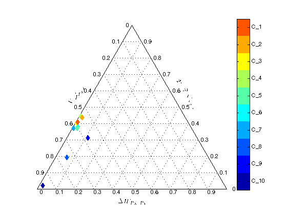
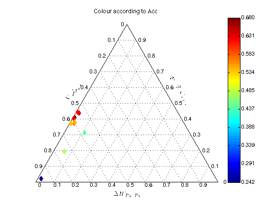
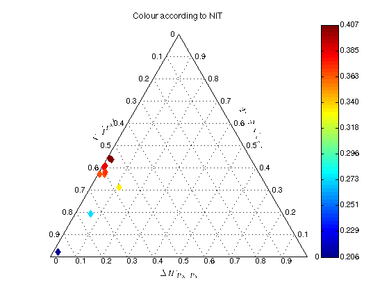
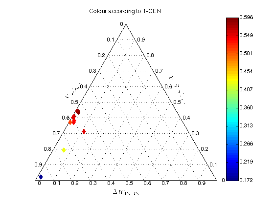
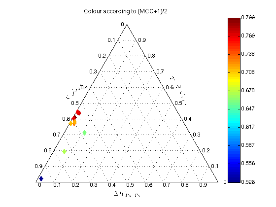
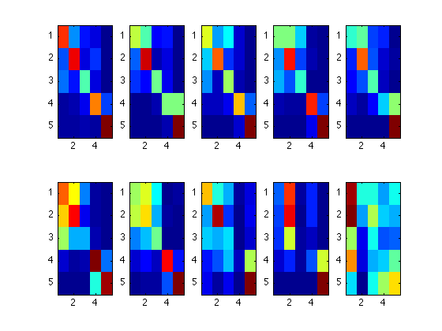

Contents
close all
clear all
Read matrices
confMatricesMEG;
M=length(MEG.mats);
for i=1:M
MEG.names{i}=sprintf('C_%d',i);
end
description='MEG';
Compare classifiers in the Entropy Triangle
compareETs(MEG.mats,MEG.names,description);
Table 'Perplexities, accuracy $a(P_{XY})$, modified accuracy $a'(P_{XY})$ and normalised information transfer factor $q_X(P_{XY})$ for MEG confusion matrices.':
MEG | $k_X$ | $k_{X|Y}$ | $\mu_{XY}$ | $a(P_{XY})$ | $a'(P_{XY})$ | $q_X(P_{XY})$ | $1-CEN$ | $MCC$
________________________________________________________________________________________________________________
C_1 | 4.950 | 2.562 | 1.932 | 0.680 | 0.390 | 0.386 | 0.564 | 0.598
C_2 | 4.950 | 2.447 | 2.023 | 0.632 | 0.409 | 0.405 | 0.596 | 0.543
C_3 | 4.950 | 2.589 | 1.912 | 0.628 | 0.386 | 0.382 | 0.552 | 0.536
C_4 | 4.950 | 2.430 | 2.037 | 0.622 | 0.412 | 0.407 | 0.579 | 0.526
C_5 | 4.950 | 2.723 | 1.818 | 0.565 | 0.367 | 0.364 | 0.542 | 0.463
C_6 | 4.950 | 2.682 | 1.846 | 0.542 | 0.373 | 0.369 | 0.537 | 0.423
C_7 | 4.950 | 2.730 | 1.813 | 0.539 | 0.366 | 0.363 | 0.510 | 0.422
C_8 | 4.950 | 3.629 | 1.364 | 0.472 | 0.276 | 0.273 | 0.422 | 0.345
C_9 | 4.950 | 2.995 | 1.653 | 0.443 | 0.334 | 0.331 | 0.547 | 0.313
C_10 | 4.950 | 4.801 | 1.031 | 0.242 | 0.208 | 0.206 | 0.172 | 0.052
% PrintTable "Perplexities, accuracy $a(P_{XY})$, modified accuracy $a'(P_{XY})$ and normalised information transfer factor $q_X(P_{XY})$ for MEG confusion matrices." generated on 21-Jan-2014 00:10:29
\begin{table}[!hb]
\centering
\begin{tabular}{lllllllll}
MEG & $k_X$ & $k_{X|Y}$ & $\mu_{XY}$& $a(P_{XY})$ & $a'(P_{XY})$ & $q_X(P_{XY})$ & $1-CEN$ & $MCC$\\
\hline\\
C_1 & 4.950 & 2.562 & 1.932 & 0.680 & 0.390 & 0.386 & 0.564 & 0.598\\
C_2 & 4.950 & 2.447 & 2.023 & 0.632 & 0.409 & 0.405 & 0.596 & 0.543\\
C_3 & 4.950 & 2.589 & 1.912 & 0.628 & 0.386 & 0.382 & 0.552 & 0.536\\
C_4 & 4.950 & 2.430 & 2.037 & 0.622 & 0.412 & 0.407 & 0.579 & 0.526\\
C_5 & 4.950 & 2.723 & 1.818 & 0.565 & 0.367 & 0.364 & 0.542 & 0.463\\
C_6 & 4.950 & 2.682 & 1.846 & 0.542 & 0.373 & 0.369 & 0.537 & 0.423\\
C_7 & 4.950 & 2.730 & 1.813 & 0.539 & 0.366 & 0.363 & 0.510 & 0.422\\
C_8 & 4.950 & 3.629 & 1.364 & 0.472 & 0.276 & 0.273 & 0.422 & 0.345\\
C_9 & 4.950 & 2.995 & 1.653 & 0.443 & 0.334 & 0.331 & 0.547 & 0.313\\
C_10& 4.950 & 4.801 & 1.031 & 0.242 & 0.208 & 0.206 & 0.172 & 0.052\\
\end{tabular}
\caption{Perplexities, accuracy $a(P_{XY})$, modified accuracy $a'(P_{XY})$ and normalised information transfer factor $q_X(P_{XY})$ for MEG confusion matrices.}
\end{table}
*****numcolors is 10
     